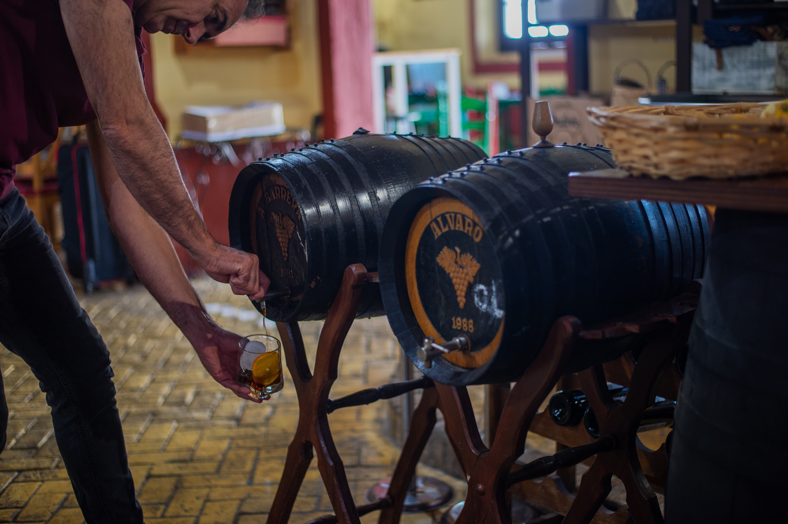
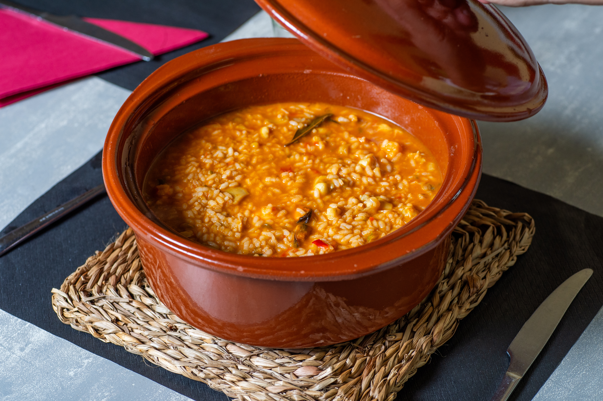
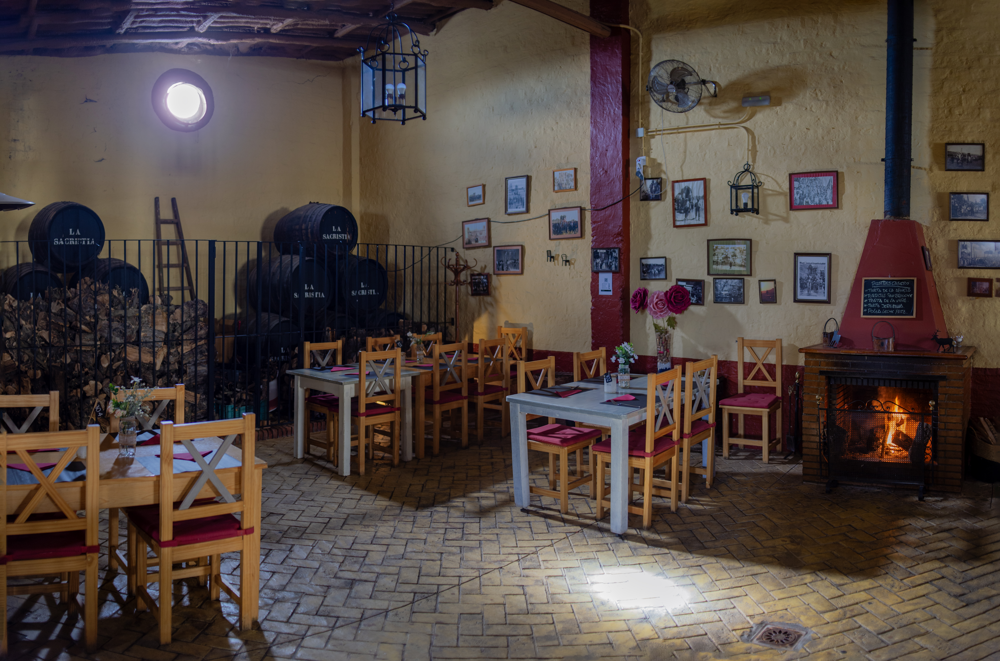
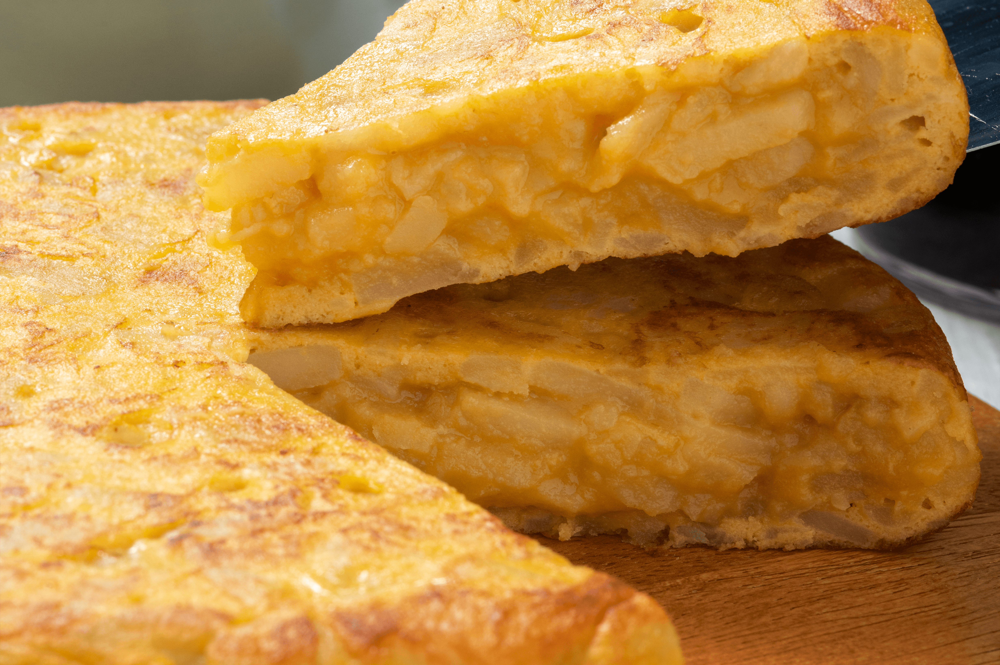
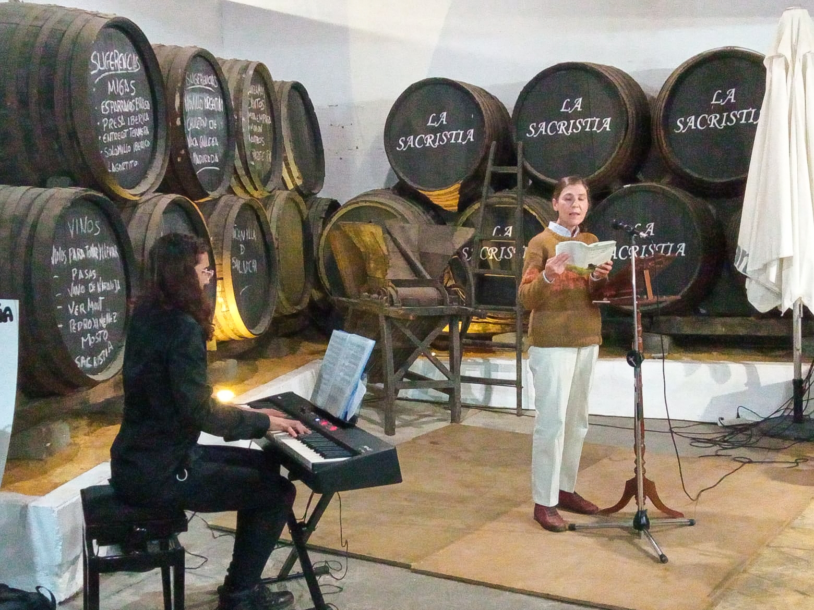

Tradición
y Cocina
Bodega fundada en los años 50 especializada en la elaboración de mosto casero. Situada en la localidad aljarafeña de Almensilla, la cocina española te sorprenderá con una gran oferta gastronómica y de vanguardia.

Se te hará la
Boca vino
La cocina de la Sacristía se basa en una cocina española y andaluza que ofrece una gran variedad gastronómica de deliciosas comidas y bebidas. Conoce todos nuestros platos elaborados artesanalmente y con una materia prima de primera calidad.

Nuestra
Bodega
La Bodega La Sacristía es un pequeño restaurante de gran tradición culinaria localizado estratégicamente en Almensilla, uno de los pequeños pueblos señalados de la Ruta del Mosto, en la comarca del Aljarafe (Sevilla).

También
Para llevar
En Bodega La Sacristía te ofrecemos la posibilidad de disfrutar de nuestra cocina en casa. Además de nuestra carta habitual, contamos con una selección exclusiva de platos solo para llevar. Lleva contigo el sabor de nuestra cocina donde tú elijas.

Nuestros
Eventos
En Bodega La Sacristía realizamos múltiples actividades culturales y de entretenimiento diferentes, así como diversos eventos privados. Descubre un espacio único en un entorno incomparable donde poder celebrar ese evento o reunión tan especial para ti y los tuyos.
